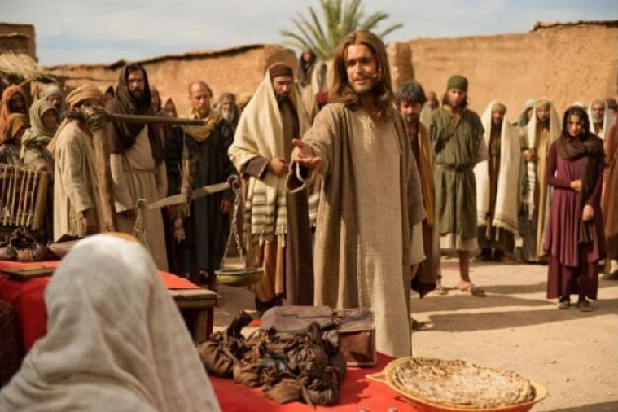

Leitura Orante
Leituras do Dia
Segunda-feira - São Mateus, Apóstolo e Evangelista
(Vermelho - Ofício da festa)
21 de setembro de 2020


Oração do dia
Ó Deus, que na vossa inesgotável misericórdia escolhestes o publicano Mateus para torná-lo apóstolo, dai-nos, por sua oração e exemplo, a graça de vos seguir e permanecer sempre convosco. Por Nosso Senhor Jesus Cristo, Vosso Filho, na unidade do Espírito Santo.
Leitura: Efésios 4,1-7.11-13
Irmãos, 1eu, prisioneiro no Senhor, vos exorto a caminhardes de acordo com a vocação que recebestes: 2com toda a humildade e mansidão, suportai-vos uns aos outros com paciência, no amor. 3Aplicai-vos a guardar a unidade do espírito pelo vínculo da paz. 4Há um só corpo e um só Espírito, como também é uma só a esperança à qual fostes chamados. 5Há um só Senhor, uma só fé, um só batismo, 6um só Deus e Pai de todos, que reina sobre todos, age por meio de todos e permanece em todos. 7Cada um de nós recebeu a graça na medida em que Cristo lha deu. 11E foi ele quem instituiu alguns como apóstolos, outros como profetas, outros ainda como evangelistas, outros, enfim, como pastores e mestres. 12Assim, ele capacitou os santos para o ministério, para edificar o corpo de Cristo, 13até que cheguemos todos juntos à unidade da fé e do conhecimento do Filho de Deus, ao estado do homem perfeito e à estatura de Cristo em sua plenitude. – Palavra do Senhor.
Salmo Responsorial: 18(19A)
Seu som ressoa e se espalha em toda a terra.
Os céus proclamam a glória do Senhor, e o firmamento, a obra de suas mãos; o dia ao dia transmite essa mensagem, a noite à noite publica esta notícia.
Seu som ressoa e se espalha em toda a terra.
Não são discursos nem frases ou palavras, nem são vozes que possam ser ouvidas; seu som ressoa e se espalha em toda a terra, chega aos confins do universo a sua voz.
Seu som ressoa e se espalha em toda a terra.
Evangelho: Mateus 9,9-13
Naquele tempo, 9Jesus viu um homem, chamado Mateus, sentado na coletoria de impostos e disse-lhe: “Segue-me!” Ele se levantou e seguiu a Jesus. 10Enquanto Jesus estava à mesa, em casa de Mateus, vieram muitos cobradores de impostos e pecadores e sentaram-se à mesa com Jesus e seus discípulos. 11Alguns fariseus viram isso e perguntaram aos discípulos: “Por que vosso mestre come com os cobradores de impostos e pecadores?” 12Jesus ouviu a pergunta e respondeu: “Aqueles que têm saúde não precisam de médico, mas sim os doentes. 13Aprendei, pois, o que significa: ‘Quero misericórdia e não sacrifício’. De fato, eu não vim para chamar os justos, mas os pecadores”. – Palavra da Salvação.
Leituras do mês
TAGS
missao Amazonia evengel covid-19 indigenas novica papa francisco
Destaques
Província Stella Matutina
Rua São Benedito, 2146 - Santo Amaro - São Paulo - SP |
Tel. (11)
5547-7222


Província Spiritus Divinae Sapientiae
Rua Arnaldo Janssen, 320 - Cara-Cara - Ponta Grossa - PR |
Tel. (42) 3326 4091